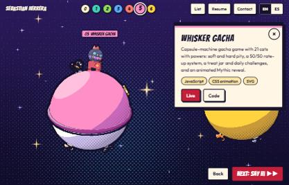
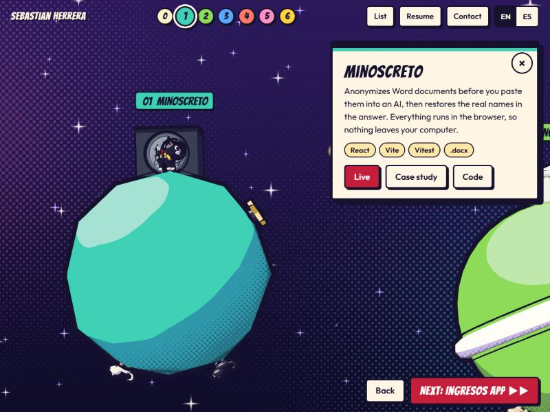
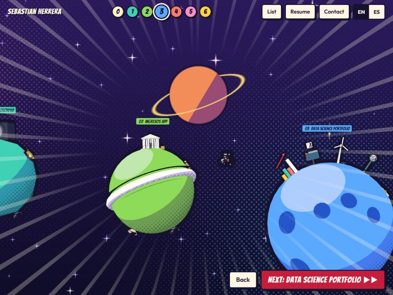
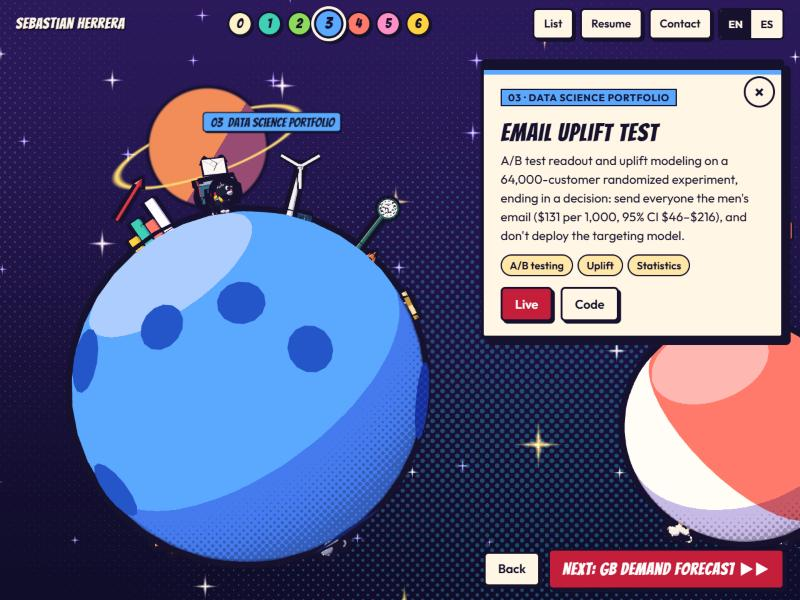
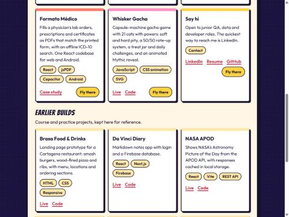
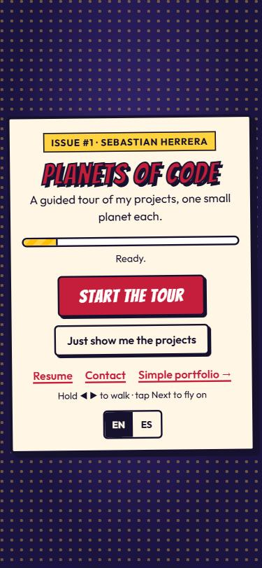
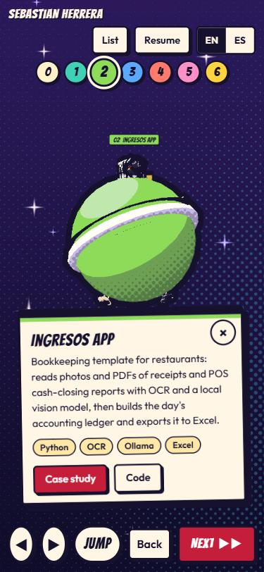
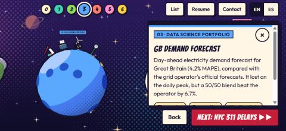
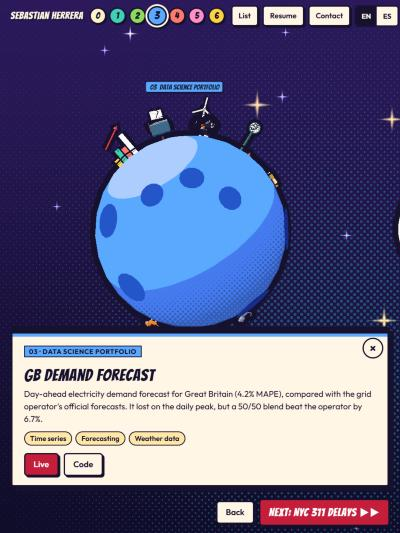

Sebastian's 3D portfolio, redesigned as a guided comic tour: a cat courier walks around small planets in space, one per project, and the visitor turns the page with Next. The list, resume and contact are one click away from the first screen.
An original tuxedo cat with chibi proportions (head about 40% of the height), big comic eyes, a yellow scarf and a red jet pack that fires while airborne. Ears, tail curl and pack read as a silhouette at 60 px. It stops just left of each landmark and faces it.
The other 12 cats of Sebastian's household sleep on the planet undersides as easter eggs that never block the route.

UI tokens pass WCAG 2.1 AA in light and dark (checked with palette-check). Planet colours are fills only; text on them is always ink, at 7.1:1 or better.
Aimed at junior QA, data and developer roles: real problems with real users or data go on planets, strongest first.
| Project | Why not on a planet |
|---|---|
| Brasa Food & Drinks | Static landing prototype; less depth than the tour projects. |
| Da Vinci Diary | Course-style notes app with login. |
| NASA APOD | Small API demo. |
| Gym Routine Generator | Course project on someone else's data. |
| Todo App | Tutorial-level CRUD. |
| Reddit Plus | Course project, no live demo. |
| Jammming | Course project, no live demo. |
flowchart LR C[Comic cover] -->|Start the tour| H[00 Hello card] C -->|Just show me the projects| L[Project list] C -->|Resume / Contact| X[Opens in a new tab] H -->|Next or Enter| P[Next stop] P -->|same planet| W[Walk to the stop, card pops] P -->|other planet| F[Hop arc, land, walk] W --> P F --> P P -->|strip dot or Fly there| F L -->|Fly there| F
| Action | Keyboard | Touch |
|---|---|---|
| Walk | ← → or A D | Hold ◀ ▶ |
| Jump (on the star: hop to the next planet) | Space, ↑, W | Jump |
| Next / previous stop | Enter or N / B | Next / Back |
| Fly to a planet | 0–6 | Strip dots |
| Project list, close | L, Esc | List, × |
Reduced motion: no arc, no roll or shake, a short fade between planets. Cards never steal focus; a polite live region announces planets and stops.








Full specs with files and acceptance checks are in docs/fable/PLAN.md.
| # | Task | Model | Difficulty | Time |
|---|---|---|---|---|
| 1 | Remove the old driving game and Rapier | Haiku | Easy | 15 min |
| 2 | Rewrite the README for the tour | Haiku | Easy | 20 min |
| 3 | Sound effects, off by default | Sonnet | Medium | 60 min |
| 4 | Haptics on touch devices | Haiku | Easy | 10 min |
| 5 | Hidden cats: 12, reaction and counter | Sonnet | Medium | 45 min |
| 6 | Recolour reused landmarks | Sonnet | Easy | 30 min |
| 7 | Tap to walk on touch | Sonnet | Medium | 40 min |
| 8 | First-visit controls caption | Haiku | Easy | 20 min |
| 9 | Keyboard help dialog | Haiku | Easy | 25 min |
| 10 | Accessibility audit with axe | Sonnet | Medium | 45 min |
| 11 | Playwright smoke test | Sonnet | Medium | 60 min |
| 12 | Cache headers and social image | Haiku | Easy | 20 min |
| 13 | Card tilt toward the pointer | Sonnet | Medium | 30 min |
| F1–F5 | Hero polish, data planet layout, hop polish, phone performance, this page | Fable | Hard | 3–4 h |